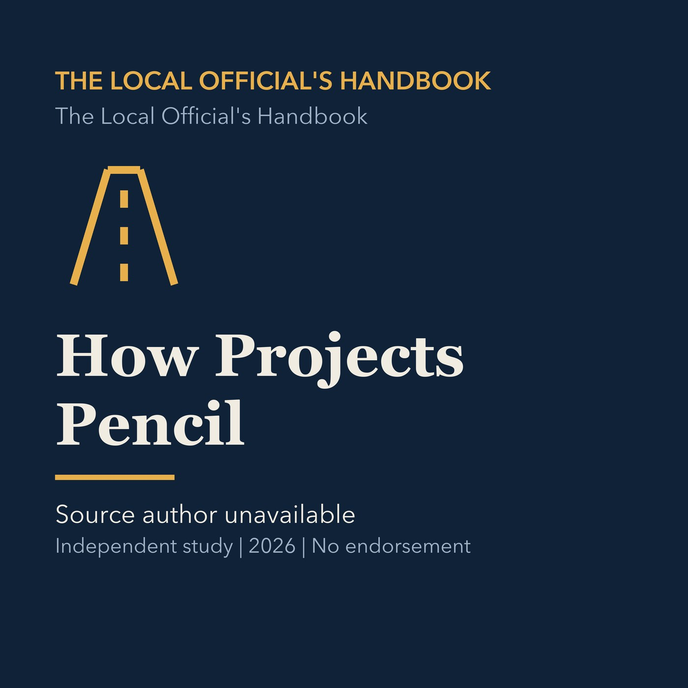

EPISODE 11
How Projects Pencil
Explains development feasibility, yield, financing, construction costs, rents, and municipal fiscal effects.

- Stable GUID
05681a02-abf4-5be8-96d5-8079c81415c2- Release
- local-officials-handbook-v2026.2
- SHA-256
d3a3d4969bcea0894e43c68d3e1a2930e4703a2a9935fa8e132ebddd9d3923c5